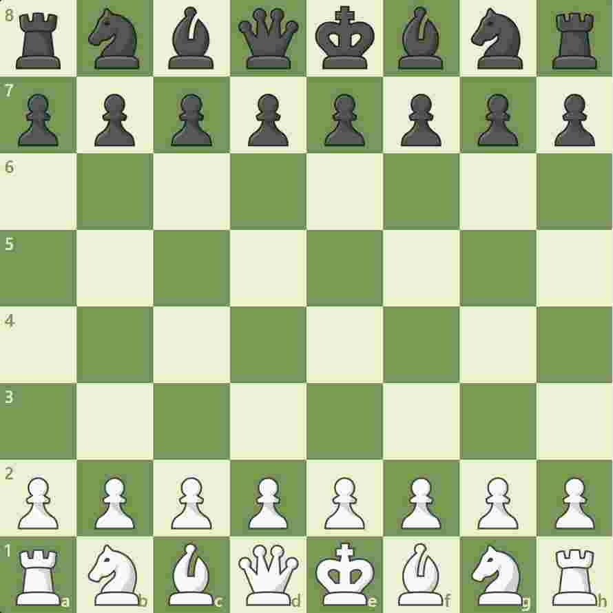
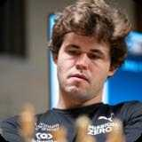
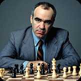
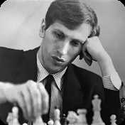
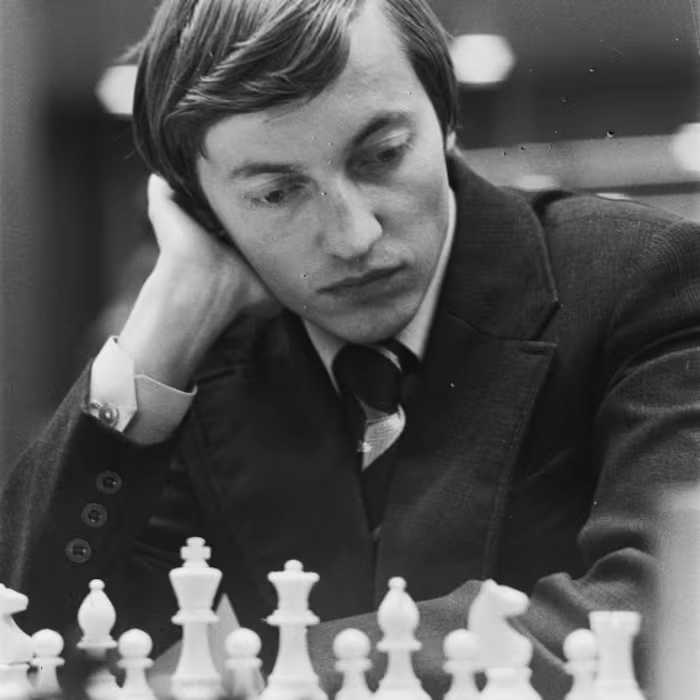

GM Magnus Carlsen :
Magnus Carlsen est considéré par beaucoup comme le meilleur joueur de tous les temps, bien que Garry Kasparov et Bobby Fischer demeurent de sérieux concurrents à cette distinction dans le cœur des fans. Quoi qu'il en soit, il est indéniable que Carlsen s'est taillé une place au sommet de la hiérarchie avant même de fêter ses 30 ans. [En savoir plus]
GM Hikaru Nakamura :
Il est l'un des meilleurs joueurs mondiaux depuis plus d'une décennie et a clairement été le meilleur joueur américain durant la majorité de ce laps de temps. Il demeure actuellement l'un des acteurs clé d'une des scènes échiquéennes les plus fortes de l'Histoire. [en savoir plus] [En savoir plus]
GM Fabiano Caruana :
Fabiano Caruana est un joueur d'échecs américano-italien né le 30 juillet 1992. En 2007, il obtient à l’âge de 14 ans, le titre de grand maître internationnal, faisant de lui le plus jeune joueur italien à avoir obtenu ce titre. La même année, il remporte son premier championnal d’Italie d’échecs, il renouvelle cette performance en 2008, 2010 et en 2011. Il joue pour les États-Unis jusqu'en 2005, puis pour l'Italie, avant de rejouer pour les États-Unis en juin 2015. Il remporte cinq fois le championnat des Etats-Unis (en 2016 et de 2022 à 2025). En 2018, il affronte Magnus Carlsen, champion du monde en titre lors de la finale du championnat du monde d’échec, mais s’incline dans les départages en parties rapides après avoir fait jeu égal en parties longues. Au 29 mai 2025, son classement est de 2 782 Elo, ce qui fait de lui le deuxième joueur mondial et le numéro un américain. Son record s'établissant à 2844 elo en Octobre 2014 à l'âge de 22 ans. [En savoir plus]

GM Garry Kasparov :
Garry Kasparov est un joueur d’échec croate et russe né le 13 avril 1963. Entre 1985 et 2000, il a été le treizième champion du monde d’échecs. Il a gagné trente tournois en tant que champion du monde. En janvier 1990, il est le premier joueur à dépasser les 2 800 Elo. En juillet 1999, il atteint le classement le plus élevé avec 2 851 points. [En savoir plus]

GM Bobby Fischer :
Bobby Fischer est le premier et unique champion du monde d'échecs américain de l'histoire. Nombreux sont ceux qui le considèrent comme l'un des plus grands joueurs d'échecs de tous les temps , et sans doute le plus célèbre. Fischer a inspiré toute une génération de joueurs d'échecs, notamment aux États-Unis et en Islande. Son succès face à l'empire russe des échecs des années 1960 et 1970 demeure l'une des performances individuelles les plus incroyables de l'histoire des échecs. Parmi ses citations les plus célèbres , l'une des plus simples illustre peut-être la vérité la plus importante et fondamentale du jeu : « Les échecs exigent une concentration totale. » [En savoir plus]

GM Anatoly Karpov:
Anatoly Karpov russe né le 23 mai 1951, est à la fois joueur d’échec, homme politique et homme d’affaire. Grand maître international depuis 1970, il a été champion du monde des échecs de 1975 à 1985 et de 1993 à 1999. Il a disputé onze finales de championnat du monde d'échecs dont une victoire par forfait en 1975 et dix matchs joués de 1978 à 1998. Il possède un des plus grands palmarès de l'histoire du jeu avec, en décembre 2012, plus de 170 premières places en tournoi. Il a remporté six olympiades d'échecs, trois championnats d'URSS et neuf « Oscar » du meilleur joueur de l'année de 1973 à 1977, de 1979 à 1981 et en 1984. [En savoir plus]